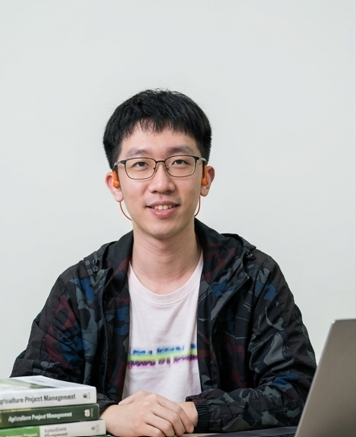
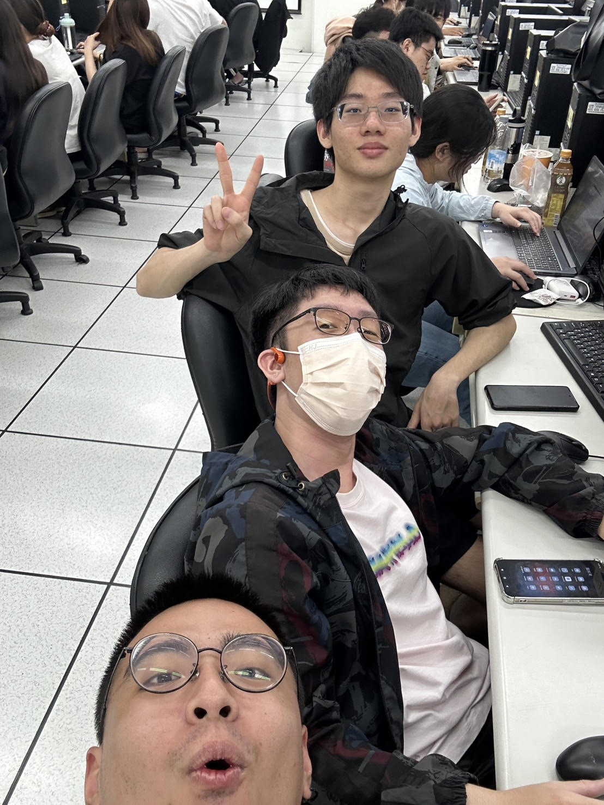
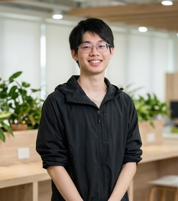

臺灣農業正面臨高齡化與糧食自給率偏低（32.28%）的結構性危機。本專題深入探討「智慧生產」與「數位服務」之雙軸轉型路徑，整合 AIoT 感測技術、多模態深度學習（如 XGBoost 與 YOLO11n 模型）及土壤微生物管理。 透過實證研究，我們成功提升了作物生長預測的穩定性與草莓炭疽病分級的準確度，並探討了 2025 碳交易制度下的低碳精準農業發展方向，將傳統「看天吃飯」的農業模式，轉變為高效、低風險且具綠色競爭力的「數據驅動」智慧生態系。
在作物生長預測中，結合「視覺特徵」與「環境感測（氮磷鉀 NPK、溫濕度）」的多模態學習表現最為優異，小白菜株高預測之決定係數（R²）可達到 0.71。環境數據能有效修正跨批次的生長背景差異，顯著提升模型泛化與預測穩定性。
針對草莓炭疽病自動化分級診斷，研究採用改良型增強版 YOLO11n 模型，準確率高達 95.5%，表現超越大型 YOLO11x 模型。該輕量化模型可完美部署於 NVIDIA Jetson Nano 等 5W 低功耗邊緣運算裝置，大幅降低小農巡田人力與設備門檻。
技術實證顯示，施用芽孢桿菌（B. subtilis LNP-1）能顯著提升土壤微生物多樣性，在維持或穩定作物產量的同時，有效抵銷化學肥料對土地造成的劣化與副作用，為低碳精準施肥提供了強大的生物學支撐。
在市場端與政策面研究中發現，消費者對於綠色農產品的「功能定位」與「情感定位」皆會顯著正向影響其購買意願。隨著臺灣預計於 2025 年啟動碳交易制度，建構完善的綠色競爭力與去中心化減碳足跡存證將是未來商機所在。
點擊播放按鈕即可觀看團隊的研究成果系統操作與核心技術展示短片。


